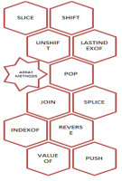

0: Overview & Assignment
Module Overview
1: Introduction to Glitch
Introducing Glitch
Glitch Tour
JS Introduction
Variables
Const, Let & Objects
Lab-1 Glitch Intro
Lab-2 JS Intro
2: Controllers & Views
Variables & Objects Review
Methods & Arrays Review
Web App Introduction
Front-end
Modules
Back-end
Lab-3 Playlist 1
3: Templates & Routes
Templates
Json
Dashboard
Playlist
MVC
Lab-4 Playlist 2
4: Model View Controller
Delete Song
Forms Design
Form Programming
Lab-5 Playlist 3
5: JS: Arrays
The Store
Arrays: Basics
Array Methods

Array Iteration
Arrays of Strings
Arrays of Objects
Lab-6 JS Arrays